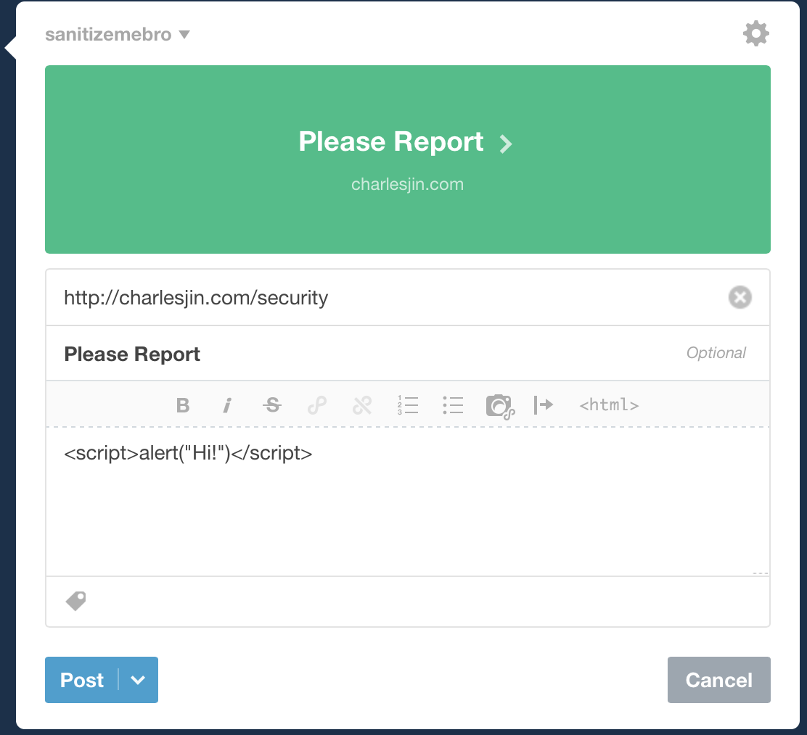
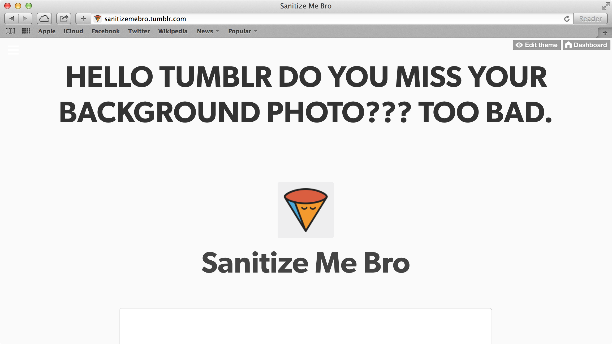
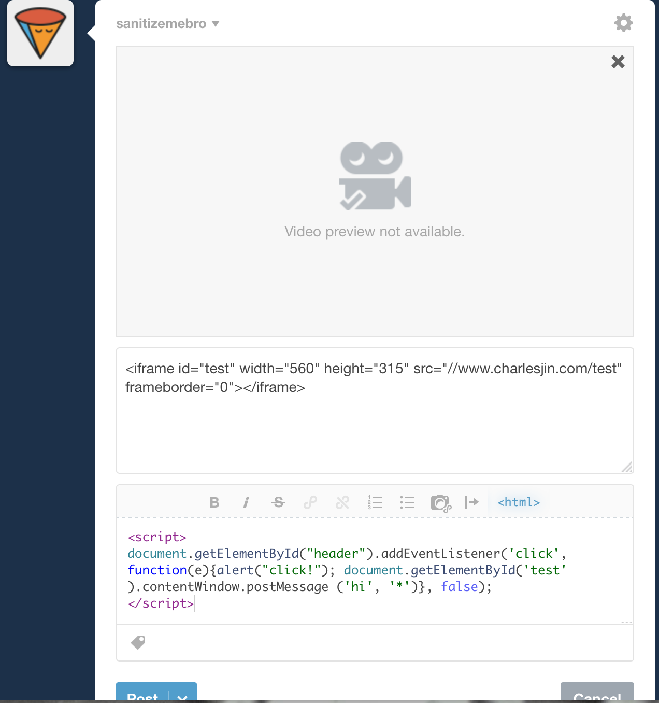
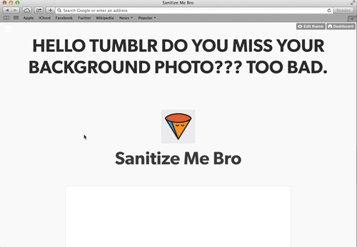
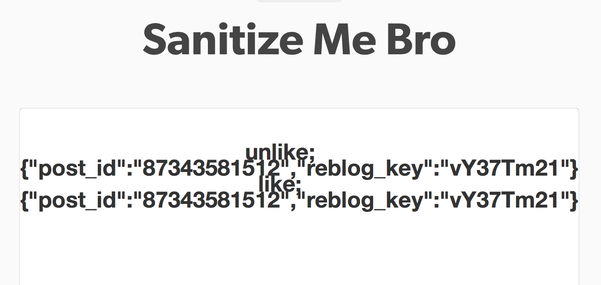

May 30, 2014
Tumblr was broken, and all it took was the first two pages of Javascript 101.
To be more specific, Tumblr's javascript sanitization system for content input was broken. A few days ago, Frank and I were designing a simple blogging feature for our product - it's a subscription-based service that helps musicians manage their interactions with fans (
we're almost live!). We thought that they would very likely want to include Youtube videos, Soundcloud content, Vimeo uploads, and other media in their blog posts. This meant we had to make a decision about allowing users to embed potentially malicious HTML content. There seemed to be a trade-off: don't sanitize and allow all scripts to run, or sanitize and nothing gets through.
Neither of these seemed like good options, so we decided to investigate other websites and see how they handled this same issue.
Tumblr was our first suspect and to our surprise, we found that the site allowed users to embed whatever they wanted without sanitizing any of the content.
Sanitize Me Bro: Javascript
To reproduce these exploits, literally all you had to do was log into Tumblr, and create a post. Click the option for "html" and type the following in:
<script>alert("Hello World!")</script>
And that's it! (Before Tumblr patches things up,
this link could show you what happens, and don't worry - it's not going to do anything funky to your computer.)

Here's the weird part: Tumblr actually wrapped all the text inside the script tags inside a CDATA section. CDATA stands for "Character Data", which actually helps a hacker trying to inject malicious javascript into a post. Normal javascript has random characters in it that will screw with an XML parser (i.e. what is translating the source code of a webpage into what your browser is rendering). So it seems like Tumblr actually just decided it'd be a good idea to let people put javascript in their Tumblr posts.
Who cares, you might think. You can already add javascript to your blog - why not allow it on a post-by-post basis. It's your domain, do what you want. Here's why it's actually pretty irresponsible: these posts retain their ability to execute javascript even after being reblogged. So that annoying alert box actually propogates to any unsuspecting follower. On self-hosted sites, this isn't as big of a problem; however, on a site like Tumblr, the additional community features like reblogging and a discovery feed allow malicious content to spread extremely quickly and reach people who never directly opted-in to see it.
Which means you could imagine writing a script that waits to execute - a "sleeper", if you will. Maybe you post a picture of a cat - the HTML content doesn't actually show up in the blog post (or the reblog interface, for that matter) - and set a timer for a week from today. No one knows any better, they think they're reblogging a kitten in a bunny costume. Then boom. Everyone's background picture is suddenly your worst enemy's baby photo.
Other things we found out you could do: even without the jQuery library, you can still select DOM nodes using traditional javascript. For all you non-coders out there, that basically gives you the ability to manipulate the underlying HTML. So let's try something slightly more advanced:
<script>
document.getElementById("header").children[0].innerHTML = "<div class='title-group animate' style='text-align: center'><h1>HELLO Tumblr DO YOU MISS YOUR BACKGROUND PHOTO??? TOO BAD.</h1></div>"
</script>
What does this one do? It replaces all the HTML content on a particular DOM node with whatever I want. So in this case, I replaced the header with some obnoxious text. Frank reblogged the post, and lo and behold, his background image had changed as well.

You can even modify Tumblr’s own javascript function definitions and object references. Essentially, by providing you access to scripts, you have the ability to manipulate not only the underlying HTML and CSS, but also the javascript that powers Tumblr’s frontend. So for example, if you include jQuery, you can do the following:
<script>
<src="//ajax.googleapis.com/ajax/libs/jquery/1.4.3/jquery.min.js">
</script>
<script>
$(document).ready(function{
Tumblr = {};
})
</script>
This destroys a lot of default functionality on the site, for example, you can no longer favorite posts. Other non-malicious things include creating style nodes and inserting styling on the fly, creating random text nodes, etc.
So far, none of this goes beyond slightly annoying. And for good reason - this isn't really a post knocking on Tumblr, so I don't really want people to get all weird trying to break Tumblr. However,
I still want to point out one of the most dangerous - and easiest to implement - applications of this bug: phishing.
<script>
window.open("http://charlesjin.com/security");
</script>
Yes, pop-up blockers have progressed. But, you could still tie a click event to a particular element (or just reappropriate an existing link), and open a window that looks exactly like Tumblr, Gmail, etc. To close out this section, one last oddity: Tumblr's warning message for account phishing is stored directly in a javascript variable "translated_warning_string". I'm not too sure when that warning message gets triggered, but you could easily overwrite it with your own official-sounding message.
Check Your Sources: iframes
Why stop there.
Javascript, sure. Just look for javascript tags, and replace the special XML characters needed for script tags < and > with their HTML escaped counterparts: < and >. Standard homework for any second-year CS course. That's easy.
But what about iframes?
iframes are special HTML element that allow for inline embedding of other documents (read: another webpage inside of your own website). Youtube videos and the like are embedded this way - when you see a Youtube video on some other website, you're actually just loading a small portion of Youtube inside of the original webpage. The way iframes are set up, you cannot interact with elements within the iframe from outside the iframe - it's usually blocked due to cross-domain safety concerns. Because what's in the iframe is literally content from another webpage, you shouldn't be allowed to embed someone else's content on your site, then manipulate it yourself, since it wasn't yours to begin with.
The story is different, though, if you control both the parent AND the child documents. The idea is that the developer should be able to communicate between the two html documents - for example, a lot of websites will display "Are you sure you want to navigate to another domain?" as something of a security check when clicking links (Exhibit A: Youtube). If you implement this via pop-up, you might want to know what the user clicks client-side as opposed to server-side (don't worry if that didn't make sense to you).
With this in mind, I tried to send a basic message from outside the iframe into the iframe. The following set up will send the message "hi" to the iframe upon clicking the header element of the Tumblr - i.e. the section where the background image was until I replaced it. Inside the iframe, the message "hi" will display as the heading. To reproduce, make a video post, and in the embed section, put the following code:
<iframe id="test" width="560" height="315" src="//www.charlesjin.com/test" frameborder="0"></iframe>
Now in the body of the actual post, put this in:
<script>
document.getElementById("header").addEventListener('click', function(e){alert("click!"); document.getElementById('test').contentWindow.postMessage ('hi', '*')}, false);
</script>
We've bound an event to the header section - to be specific, a "click".
Now, every time a "click" event is detected on the header, the parent frame - i.e. Tumblr - will send the message "hi" to the DOM element with ID "test". Luckily, our iframe was set up exactly with this ID.

Finally, to recieve this message, I have on my webpage
<script>
window.addEventListener("message", receiveMessage, false);
function receiveMessage(event){
$("h1").append(event.data);
};
</script>
This sets the page up to listen for messages being sent to it.

Using this, someone can theoretically intercept everything that happens on your Tumblr page, send it to their own site, and save it in their database.
As an aside, if you choose to implement this sort of communication scheme for your own purposes, you should actually check to make sure the event is being fired from a trusted domain by calling event.origin. Also never send messages with the wildcard target origin. Case in point: watch the listener I set up within my iframe intercept the messages Tumblr uses to communicate a like (the like button lives in its own iframe). Since Tumblr's message listeners don't actually check who's sending the messages, it shouldn't be too hard to spoof the message from within our iframe and auto-like everything within sight on the page.

The scary part is there really isn't a good solution to this problem. Because iframes originate from a different domain, there isn't much you can do to police what people will do from within iframes. This means you can embed whatever malicious javscript you want - open a new window, phish, etc. - without any safeguards. The one caveat is you can't interact directly with the DOM, but that's barely an incovenience...
The best solution we've seen to this problem is how Facebook handles media in their newsfeed. Facebook has a whitelist of services for which they choose to render in-line media. For example, if you post a Youtube link, Facebook will add new div to your post, which is binded on click to make an AJAX call to pull up the Youtube iframe. Other services that have this special inline embed privelege include Soundcloud, Spotify, and Vimeo. Non-whitelisted services will just open in a new window, which means the extremely malicious content on charlesjin.com doesn't run in the same window as your Facebook account.
There is one comforting fact: in the day we spent playing around, we didn't manage to get any of this behavior to show up in a user's feed. This means you'd have to navigate to the actual blog for this to happen. Which is actually a huge relief.
Closing Thoughts
This is by means no mean a condemnation of Tumblr exclusively. They just happened to the site that first came to mind, with a pretty sizeable user base to boot. Our hope is that this message will get disseminated further - we don't really have the time right now to go searching down every instance of a site that allows embedded HTML. Allowing styling on webpages is fine, so long as some sanitization function nukes all script tags before the message is posted. It's either that, or anything goes.